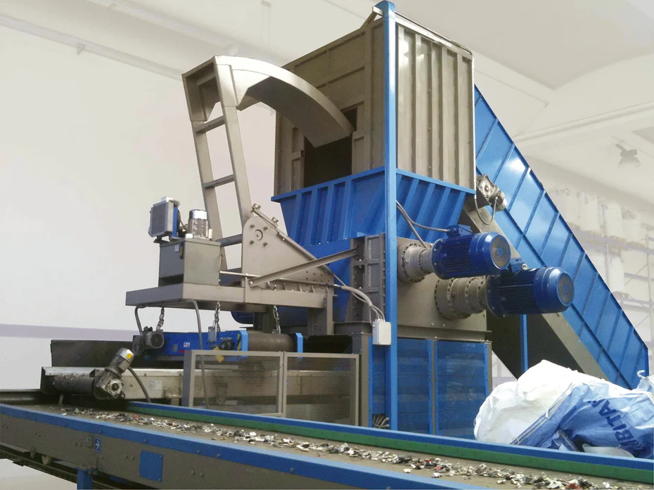
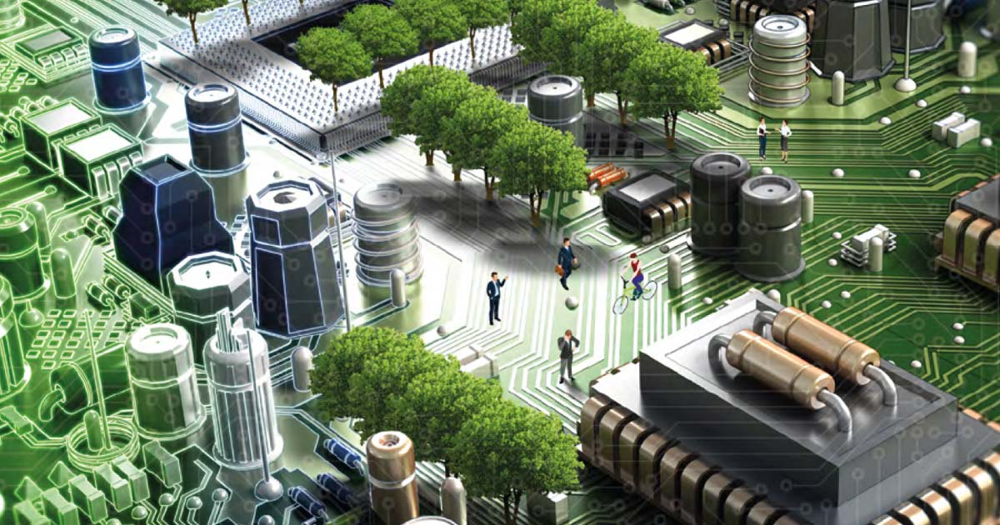

Come svolgerte lo smaltimento dei rigiuti RAEE?
I RAEE domestici possono essere correttamente smaltiti seguendo due canali principali:
- conferendoli presso le aree di raccolta gestite dai Comuni
- restituendoli ai rivenditori, che provvederanno a stoccarli temporaneamente e a farli pervenire ai centri specializzati nel loro trattamento.
smaltimento rifiuti domestici

Nel primo caso, il conferimento può essere effettuato direttamente dai singoli cittadini presso
le aree deputate presenti nel territorio comunale.
La legge stabilisce precise norme in merito alle modalità di raccolta dei RAEE domestici
da parte dei Comuni, tutte finalizzate a incentivare la differenziazione di questo tipo di rifiuti e
il loro corretto trattamento. Le normative, nello specifico, sottolineano che «i Comuni devono
assicurare la funzionalità e l’adeguatezza, in ragione della densità della popolazione, dei sistemi
di raccolta differenziata dei RAEE provenienti dai nuclei domestici e l’accessibilità ai relativi
centri di raccolta» e che la raccolta dei RAEE prodotti all’interno del territorio comunale deve
essere sempre gratuita. Se un Comune non dispone di un centro di raccolta idoneo, è tenuto a
stipulare convenzioni con i Comuni vicini per permettere ai suoi cittadini di disporre di uno spazio
in cui conferire i loro rifiuti.
La seconda possibilità è quella di restituire i RAEE direttamente a coloro che li rivendono.
smaltimento rifiuti professionali
Lo smaltimento dei RAEE professionali richiede una particolare attenzione, perché l’azienda o l’organizzazione che ha prodotto i rifiuti deve essere in grado di dimostrare di averli smaltiti correttamente, pena il rischio di incorrere in sanzioni.

Il problema del trattamento dei RAEE professionali è particolarmente sentito perché tutte le attività produttive si servono di una grande quantità di dispositivi elettronici – computer e monitor, fotocopiatrici, scanner e altri strumenti di lavoro, ma anche oggetti come climatizzatori, piccoli frigoriferi messi a disposizione dei dipendenti, macchine per il caffè e così via – che, per loro natura, vanno incontro a rapida obsolescenza e devono essere sostituiti con una certa frequenza. Un’azienda che impiega decine di dipendenti e fornisce a ciascuno di loro un computer e altri strumenti di lavoro essenziali si trova inevitabilmente a dover sostituire ogni anno moltissimi dispositivi elettronici, producendo in questo modo una grande quantità di RAEE il cui smaltimento deve rimanere tracciabile.